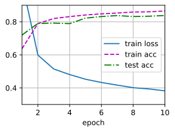
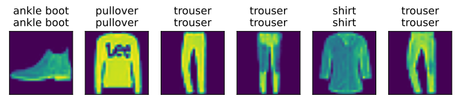
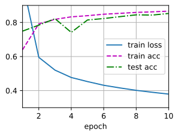

多层感知机代码精读，代码使用了Fashion-MNIST数据集
多层感知机从零开始实现
设置迭代器及批量大小
1
2
3
4
5
6
| import torch
from torch import nn
from d2l import torch as d2l
batch_size = 256
train_iter, test_iter = d2l.load_data_fashion_mnist(batch_size)
|
初始化模型参数
Fashion-MNIST中的每个图像由 $28\times 28 = 784$ 个灰度像素值组成。所有图像分为10个类别，我们简单地将每个图像视为具有 784 个输入特征和10个类的简单分类数据集。首先，实现一个具有单隐藏层的多层感知机，包含256个隐藏单元（这两个变量可以视为超参数）。通常选取 2 的若干次幂作为层的宽度（就是隐藏单元个数），因为内存在硬件中的分配和寻址方式，这么做往往可以在计算上更高效。
1
2
3
4
5
6
7
8
9
10
| num_inputs, num_outputs, num_hiddens = 784, 10, 256
W1 = nn.Parameter(torch.randn(
num_inputs, num_hiddens, requires_grad=True) * 0.01)
b1 = nn.Parameter(torch.zeros(num_hiddens, requires_grad=True))
W2 = nn.Parameter(torch.rand(
num_hiddens, num_outputs, requires_grad=True) * 0.01)
b2 = nn.Parameter(torch.zeros(num_outputs, requires_grad=True))
params = [W1, b1, W2, b2]
|
激活函数
手撸ReLU函数：
1
2
3
| def relu(X):
a = torch.zeros_like(X)
return torch.max(X, a)
|
模型
因为忽略了空间结构，因此只要用 reshape 函数将每个二位图像转换为一个长度为 num_inputs 的向量：
1
2
3
4
| def net(X):
X = X.reshape((-1, num_inputs))
H = relu(X@W1 + b1)
return (H@W2 + b2)
|
损失函数
损失函数的定义详情可以看softmax回归的实现，这里直接用框架的内置函数。
1
| loss = nn.CrossEntropyLoss(reduction='none')
|
训练
多层感知机的训练过程与 softmax 回归的训练过程完全相同，直接调用 d2l 包的 train_ch3 函数，迭代周期设为10，学习率设0.1
1
2
3
| num_epochs, lr = 10, 0.1
updater = torch.optim.SGD(params, lr=lr)
d2l.train_ch3(net, train_iter, test_iter, loss, num_epochs, updater)
|

在测试数据上进行评估：
1
| d2l.predict_ch3(net, test_iter)
|

多层感知机的简洁实现
相关包及工具
1
2
3
| import torch
from torch import nn
from d2l import torch as d2l
|
模型
相比于 softmax 回归的简洁实现，唯一的区别就是添加了2个全连接层（之前只添加了1个全连接层）。第一层是隐藏层，包含256个隐藏单元并使用了 ReLU 激活函数。第二层是输出层。
1
2
3
4
5
6
7
8
9
| net = nn.Sequential(nn.Flatten(),
nn.Linear(784, 256,
nn.ReLU(),
nn.Linear(256, 10)))
def init_weights(m):
if type(m) == nn.Linear:
nn.init.normal_(m.weight, std=0.01)
net.apply(init_weights)
|
训练过程的实现与实现softmax回归时完全相同。
1
2
3
4
5
6
| batch_size, lr, num_epochs = 256, 0.1, 10
loss = nn.CrossEntropyLoss(reduction='none')
trainer = torch.optim.SGD(net.parameters(), lr=lr)
train_iter, test_iter = d2l.load_data_fashion_mnist(batch_size)
d2l.train_ch3(net, train_iter, test_iter, loss, num_epochs, trainer)
|
